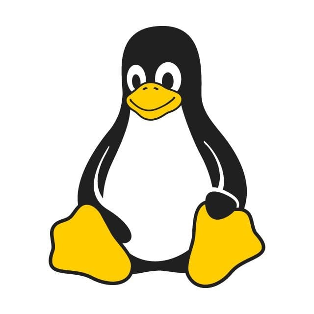

Em 1991, Linus Torvalds começou a trabalhar em um projeto pessoal que, inicialmente, era apenas um hobby: um kernel (núcleo) de sistema operacional. Ele queria que esse kernel fosse compatível com os padrões POSIX do UNIX, para que pudesse rodar em computadores x86. No dia 25 de agosto de 1991, Torvalds postou uma mensagem no grupo de notícias comp.os.minix, anunciando que estava desenvolvendo um novo sistema operacional gratuito e pedindo feedback de outros programadores.
Porque aprender Linux?
O Linux é amplamente usado em vários setores e tipos de dispositivos. Ele está presente em servidores de internet, dispositivos móveis (como Android, que é baseado em Linux), data centers, supercomputadores, roteadores, e sistemas embarcados. Empresas grandes como Google, Facebook, Amazon, e Microsoft utilizam Linux em grande escala para gerenciar suas infraestruturas.
Saber trabalhar com Linux pode abrir portas em vários setores, já que muitas organizações o utilizam para hospedar seus serviços e aplicações.Uma das maiores vantagens do Linux é ser um sistema operacional de código aberto. Isso significa que qualquer pessoa pode ver, modificar e distribuir o código-fonte. Isso é excelente para desenvolvedores e entusiastas de tecnologia, pois permite um nível de controle e personalização que outros sistemas, como Windows e macOS, não oferecem.
Além disso, você pode aprender muito sobre como um sistema operacional funciona ao mexer diretamente no código e personalizá-lo conforme suas necessidades.
Sobre o mascote

O mascote do Linux, o pinguim chamado Tux, tem uma história curiosa e até um pouco humorística. Tudo começou com o criador do Linux, Linus Torvalds, que tinha uma afinidade especial por pinguins. Segundo a lenda, Torvalds teria sido "mordido" por um pequeno pinguim durante uma visita a um zoológico na Austrália, e isso o fez desenvolver uma certa simpatia pela espécie. Essa história, embora divertida, se tornou parte da mitologia em torno da escolha do pinguim como mascote. Saiba mais sobre a historia do mascote!